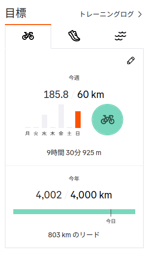

2025年 年間4,000km走破記念（お散歩カメラ 2025-10-19）

実は一昨日の時点で年間走行目標の4,000kmまで残り50kmほどになってまして。 残り50kmなら今日中に行けるやろ。 というわけで，お出かけした。
まずは八雲温泉へ
いやぁ，涼しくなったねぇ。 慌てて長袖を引っ張り出したよ。
まずは八雲温泉へ Go
涼しくなって露天風呂が気持ちいい。 一生入っていられる気分だが，いつものように1時間ほどで切り上げる。
木次乳業さん，いつもお世話になっています。 昼飯はいつもよりちょっとだけ奮発して。
今年1年事故もなく過ごせたので，交通安全のお守りを買った熊野大社へお参りしておこう。 いや，今年は後2ヶ月あるけどね。
腹ごなしもできたので市内に戻る。
稲 Whole Crop Silage
さて，一昨日は東の方へ行ったので，今日は西の方へ行こうか。 といっても時間的にフォーゲルパークは難しいので（行っても遊ぶ時間が少ない），その手前にある道の駅 秋鹿なぎさ公園へアイスを食べに行くことにした。
しばらく和んでからまた市内へ戻る。
道中，変わった機械を見かける。
稲 WCS (Whole Crop Silage) あるいは稲発酵粗飼料というのは，飼料用に栽培した稲を茎葉ごと収穫して発酵飼料にしたものらしい。
- 稲発酵粗飼料（稲ホールクロップサイレージ）について – 飼料：農林水産省
- 稲WCSを作りませんか？ : 新潟県の資料
- 島根県：飼料イネの低コスト安定栽培法（トップ / しごと・産業 / 農林業 / 技術情報 / 農業技術情報 / 研究情報 / 研究成果 / センターだより）
家畜用飼料の価格高騰への対策と稲作圃場の有効活用として今世紀に入ってから注目されているそうな。
写真に写ってる機械はこれかな。
あとは収穫した飼料をラッピングする機械もいた。
このようにラップした状態で発酵させるらしい。 この機械はこれかな。
農作業機械はかっこいいよね！
リアディレイラーの修理とお湯かけ地蔵
一昨日のサイクリングで気がついたのだが，リングの前後ともに一番インナー側へシフトするとチェーンが外れる。 こりゃあリアのディレーラーハンガーが曲がっちまってるかな。
というわけで自転車屋さんに持ち込む。
なんか今日は忙しいみたいで，待ち行列が発生していて，修理が終わるまで1時間ほどかかるとのこと。 折角なので松江しんじ湖温泉駅の近くにあるというお湯かけ地蔵まで行ってみることにした。
傍らに柄杓があり，案内板に「お湯をかけてお祈りしてね（←意訳）」と書いてあったので，お湯をかけてみた。
そのうち「修理が完了しました」と連絡が来たので，自転車を受け取る。 やっぱディレーラーハンガーが曲がってたらしい。 部品の交換と工賃で4千円以上取られた。 まぁ，しょうがない。
2025年 年間4,000km走破記念
その後は寄り道しつつ帰宅。 おかげさまで今年の目標である年間4,000kmを走りきった。

Stravaより
まぁ，サイコンで計測したもののみで計上しているので，実際にはもうちょっと走ってると思うけど，誤差誤差。
3年前に（30年ぶりに）自転車を再開したときは筋力も体力も弱りきってて1日10kmも走れればいい方だったのに，今では「1日トータル50kmなら行けるやろ」って思えるようになったもんな。 継続は力なりってやつやね。 それでも20代の頃に比べたら全然走れてないけどさ（笑）
年初に想定してたのより1ヶ月以上早く達成できてしまった。 来年の目標はどうしようかな。 まぁ，今年いっぱい走ってみた記録を見て考えよう。
参考

- Canon コンパクトデジタルカメラ PowerShot ZOOM 写真と動画が撮れる望遠鏡 PSZOOM
- キヤノン (Release 2020-12-10)
- エレクトロニクス
- B08L4WKDZ7 (ASIN), 4549292179675 (EAN)
- 評価
望遠鏡型コンパクトデジカメ。メモリと充電器（要 Power Delivery）は別に用意する必要がある。使い勝手はまぁまぁ。

- GARMIN(ガーミン)Edge Explore 2 Power サイクルコンピューター【日本正規品】
- ガーミン(GARMIN) (Release 2022-09-22)
- スポーツ用品
- B0BD7FGVR6 (ASIN), 0753759310660 (EAN), 753759310660 (UPC)
- 評価
Garmin 製のルート探索・ナビゲーション特化のサイコン。タッチパネル助かる。充電ポートは USB-C (not PD)。また別売りの変換ケーブルを使いモバイルバッテリからパワーマウント経由で給電することもできる。ライドタイプが「ロード」「屋内」「グラベル」の3種類しかない。 Live Segment 非対応。

- アワータイムイエロー
- ReGLOSS (メインアーティスト)
- hololive RECORDS 2025-09-14 (Release 2025-09-14)
- MP3 ダウンロード
- B0FNVV83KN (ASIN)
- 評価

- 落噺 (儒烏風亭らでん SOLO)
- ReGLOSS (メインアーティスト)
- cover corp. 2025-08-03 (Release 2025-08-03)
- MP3 ダウンロード
- B0FKB9Y1GL (ASIN)
- 評価
「おとしばなし」と読むらしい。語るように歌い，歌うように語る。「儒烏風亭らでん」らしい秀逸な作品。 mora で高解像度版が買える。